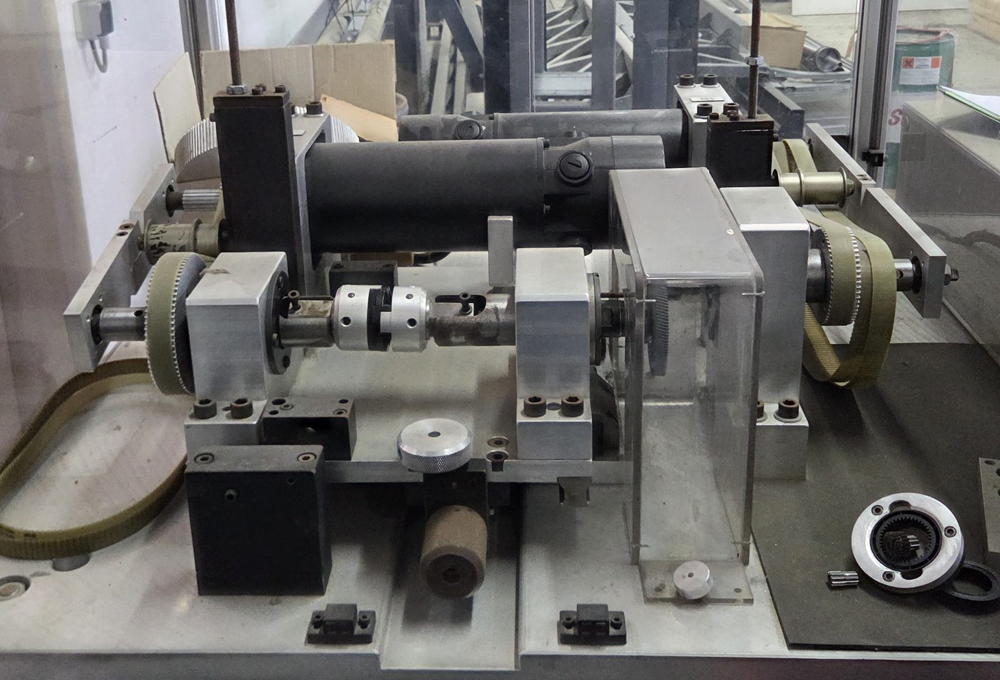
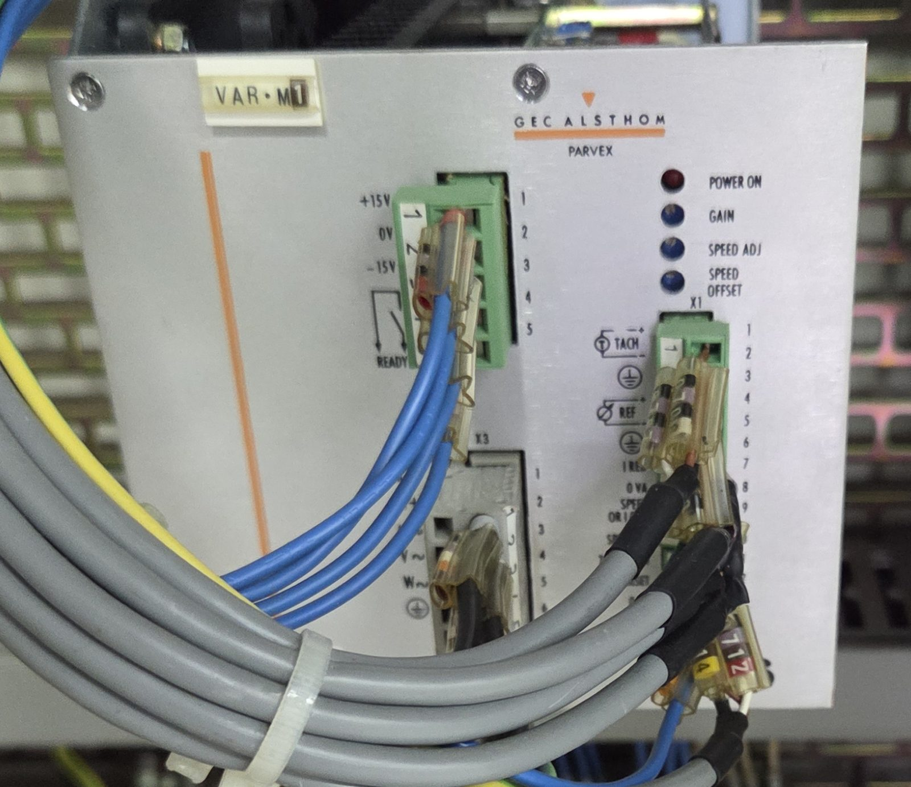

Le principe prévu consiste à entraîner les pièces avec une machine électrique et à appliquer une charge avec la seconde. Les dents transmettent alors un effort dans la zone de contact.
CHAÎNE MÉCANIQUE SIMPLIFIÉE
EntraînementContact entre les denturesCharge résistante
Schéma simplifié — valeurs relatives, aucune mesure du banc. L’affectation exacte des rôles d’entraînement et de charge à M1 ou M2 reste à confirmer.
On serre les axes portant les roues d’essai dans les porte-pinces. Les deux pièces sont positionnées pour permettre leur contact.
Pourquoi deux moteurs ? Pour dissocier la mise en rotation et l’effort transmis. Une roue qui tourne presque à vide sollicite peu ses dents. Une charge résistante les fait travailler.
Pourquoi des courroies ? Elles relient les moteurs aux broches. Les poulies permettent d’adapter la transmission ; la zone d’essai se trouve entre les pièces montées sur les broches.
02 / LES TRANSMISSIONS EN PERSPECTIVE
Tourner autour. Suivre chaque liaison.
Deux chaînes relient les machines électriques aux roues d’essai. Explore les moteurs, les courroies, les paliers et le contact entre les dentures.
Glisse pour tourner la vue. Au clavier : flèches sur le dessin. Les boutons offrent aussi des vues prêtes à lire.
Modèle pédagogique en perspective : proportions, denture et disposition simplifiées. Les arbres d’essai sont parallèles et les roues illustrent un engrènement extérieur 1:1. La vue écartée ne représente pas une course de réglage. Ce dessin ne remplace pas une maquette CAO ni les cotes vérifiées du banc.
03 / LA MACHINE RÉELLE
Reconnaître chaque composant.
Commence par les repères de la photo. Puis sélectionne un composant pour l’observer de plus près.

Repères sur la vue réelle. Les porte-pièces et la zone d’essai sont partiellement masqués par le carter.
LIRE LA PHOTO
M1 est une des deux machines à courant continu. Son ensemble est fixe mécaniquement ; son rôle d’entraînement ou de charge reste à confirmer.
Fixe / mobile décrit le montage mécanique. Cela ne définit pas le rôle moteur / frein.
Moteurs M1 et M2, avec transmissions par courroies crantées.
DEUX MACHINES ÉLECTRIQUES IDENTIQUES
Les moteurs
Les cylindres noirs repérés M1 et M2 sont des servomoteurs à courant continu de la famille Parvex RX630E. Chaque moteur est associé à un variateur de famille Parvex RTS et dispose d’un retour tachymétrique pour la vitesse.
Le descriptif distingue un ensemble M1 fixe et un ensemble M2 mobile. Cela ne suffit pas à attribuer avec certitude le rôle moteur ou frein à chacun.
04 / COMMANDE ET MESURE
Piloter le mouvement. Comprendre les signaux.
Le variateur pilote la machine électrique. Le pupitre affiche des valeurs et donne accès aux commandes. Pour concevoir la suite, il faut retracer leurs liaisons.

Un des deux variateurs, repéré VAR·M1.
Les variateurs Parvex RTS
La famille RTS est identifiable sur les photos. Elle est destinée aux moteurs à courant continu. Un retour tachymétrique est présent sur la motorisation.
La référence complète, le calibre et la configuration de chaque variateur restent à identifier. La documentation de famille ne remplace pas la notice de la variante installée.
Le pupitre utilise des afficheurs de famille DITEL MICRA. La valeur en Nm indique une échelle d’affichage ; elle ne permet pas encore d’identifier la source du signal.
Variante, entrée utilisée, mise à l’échelle et étalonnage inconnus. Les mentions RS232C / RS485 ne prouvent pas que les options de communication sont installées.
Origine du signal ?Capteur, courant ou autre signal à identifier
Traitement / échelle ?Conversion, signe et unités à vérifier
Afficheur MICRAVariante et entrée à relever
Valeur en NmÉtalonnage à documenter
Pour exploiter le couple d’essai, il faut connaître la provenance du signal, son lien avec le couple aux pièces et sa précision. Aucun couplemètre direct n’a été identifié avec certitude dans les vues disponibles.
Schéma électrique du banc : non retrouvé. Les photos montrent l’armoire et ses appareils, mais ne suffisent pas à valider le câblage, les fonctions du sélecteur GENE / FREIN ou les limites de commande.
Les procédures MAGTROL retrouvées concernent un autre moyen d’essai équipé de couplemètres. Elles ne constituent pas la procédure de ce banc Parvex.
05 / LES RÉGLAGES
Adapter le banc à l’essai.
La position des axes définit la géométrie du montage. Les poulies adaptent la vitesse et le couple disponibles aux broches.
POSITION DES AXES
0–125 mm
Décalage transversal annoncé dans le descriptif. M1 est fixe ; l’ensemble M2 est mobile.
Espace entre mandrins, b
Inférieur à 15 mm
Hauteur disponible annoncée
200 mm
Cote C du schéma
110 mm · fonction à préciser
La cote b ne représente pas le jeu entre les dents. Ces valeurs documentaires ne constituent pas une vérification de la course ou de la précision du banc.
EFFET D’UN RAPPORT DE POULIES
Plus de vitesse, moins de couple.
× 0,5× 1× 2
vitesse relative à la broche
couple relatif disponible
À vitesse et couple moteur identiques, hors pertes. Les valeurs sont normalisées par rapport à une transmission 1:1. Elles ne donnent ni les rapports montés ni les capacités réelles du banc.
MONTAGES PRÉVUS PAR LE DESCRIPTIF
Dentures extérieures droites ou hélicoïdales · Dentures intérieures avec adaptateur · Cardan avec décalage a = 0
06 / UN EXEMPLE DE CYCLE
Travailler. Laisser une pause.
Le scénario de calcul fourni prévoit un aller, une pause, un retour et une seconde pause. Modifie les paramètres pour comprendre leur effet sur la durée d’une campagne.
Paramètres de l’exemple
Compter aussi les tours cumulés
Hypothèse indépendante de la durée du cycle. Les tours ne sont pas déduits du temps de mouvement.
CHRONOGRAMME D’UN CYCLE
8 s
24 s
8 s
24 s
Aller : un premier mouvement de 8 secondes est prévu dans ce scénario.
pause après chaque mouvement
durée d’un cycle complet
durée théorique de la campagne
tours cumulés, selon l’hypothèse saisie
Pause = temps de mouvement × (1 − facteur de marche) / facteur de marche. Cycle = 2 × (mouvement + pause). Durée totale = cycle × nombre de cycles.
Exemple de calcul issu de « ED Essai.xlsx », sans preuve qu’il soit déjà programmé sur le banc. La durée suppose un fonctionnement 24 h/24, hors interruptions. Le facteur de marche décrit ici la part de temps actif ; il ne valide pas les limites thermiques des moteurs ou du montage. Aucune vitesse ni charge réelle n’est déduite de cet exemple.
07 / VOIR LA MÉCANIQUE
Le mouvement, à la main.
Cette séquence de 17,6 secondes montre les poulies, les arbres et l’accouplement manipulés manuellement.
La vidéo montre la liaison mécanique. Elle ne démontre pas un essai motorisé sous charge. La version présentée est sans audio.
08 / COMPRENDRE L’USURE
Ce que l’essai permet d’étudier.
Les contacts répétés entre les dents sollicitent leur surface. Pour comparer des dentures, les conditions de chaque essai doivent être définies et documentées.
01
Avant l’essai
Identifier les matériaux et la géométrie. Photographier ou mesurer l’état initial des dents.
02
Pendant l’essai
Définir la vitesse, la charge, la durée et le cycle. Suivre les afficheurs et consigner les conditions.
03
Après l’essai
Comparer les surfaces, dimensions ou profils. Rechercher une évolution de l’usure ou des dommages.
Les éléments disponibles ne montrent pas de mesure automatique de l’usure. La méthode de mesure et les critères d’acceptation doivent être définis pour chaque campagne.
09 / PRÉPARER LA CONCEPTION
Arriver en réunion avec les bons points.
La feuille de route prévoit l’adaptation de la vitesse et des posages, la commande des moteurs, les cycles, le facteur de marche et le couple. Ces questions permettent de cadrer le travail avant de choisir une solution.
01
Choisir l’essai cible
Pièces, conditions d’engrènement, vitesse, charge et critère d’usure.
02
Définir ce qu’il faut valider
Chaîne de commande, mesure du couple et capacités utiles aux broches.
03
Attribuer les vérifications
Responsables, documents attendus et prochain essai de validation.
Questions à aborder
Coche une question après discussion. Ce suivi ne vaut pas validation technique du banc.
Notes conservées dans ce navigateur, sur cet appareil.
À garder en tête : 7,8 Nm est un couple M₀ à basse vitesse. Sa disponibilité en continu à 2 400 tr/min n’est pas démontrée. M1 fixe / M2 mobile ne définit pas leurs rôles électriques. Les procédures MAGTROL décrivent un autre moyen.
10 / LES REPÈRES TECHNIQUES
Les données. Et leurs limites.
Motorisation identifiée
Données lues sur les plaques moteurs
Famille moteur
Parvex RX630E · courant continu
Référence lue
RX630ER1100
Tension indiquée
134 V
Courant I₀
16 A
Couple M₀ à basse vitesse
7,8 Nm
Vitesse nominale indiquée
2 400 tr/min
Retour tachymétrique
6 mV / (tr/min)
M₀ et la vitesse nominale sont deux caractéristiques distinctes. On ne peut pas conclure que 7,8 Nm sont disponibles en continu à 2 400 tr/min. Le couple aux pièces dépend aussi des poulies et des pertes.
Ce qui reste à confirmer
L’affectation précise des fonctions entraînement et charge à M1 et M2.
Le mode de mesure du couple et son étalonnage.
Les rapports des poulies installées et les limites sous charge.
La programmation exacte des cycles et le fonctionnement électrique actuel.
Sources de cette visite
Analyse de 37 photographies prises le 9 avril 2026 et d’une vidéo de 17,6 secondes, croisées avec « Descriptif banc.docx » et « Banc usure denture.pptx ».
La présentation décrit les objectifs de remise en route et indique une partie électrique non testée au moment de sa rédaction. Le PDF « Banc usure denture 2026 05.pdf » reprend cette présentation, sans résultat de remise en service. Le scénario de cycle provient de « ED Essai.xlsx » ; il n’atteste pas une programmation effective. Les références RTS et MICRA sont issues des photos de l’armoire et du pupitre, rapprochées des documents constructeur. Cette visite explique le principe et les points de conception ; elle ne valide pas la remise en service.